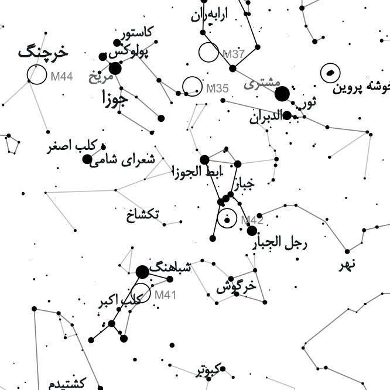
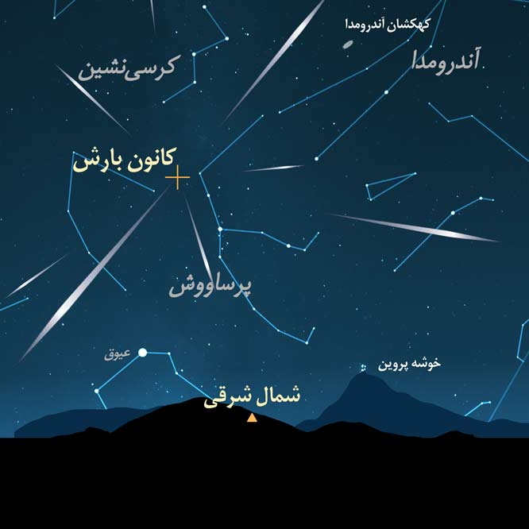
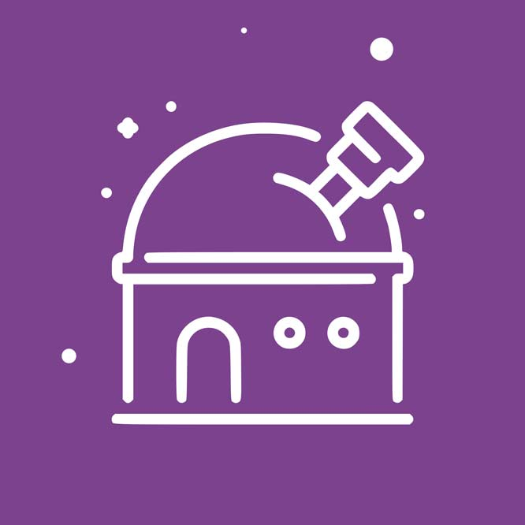
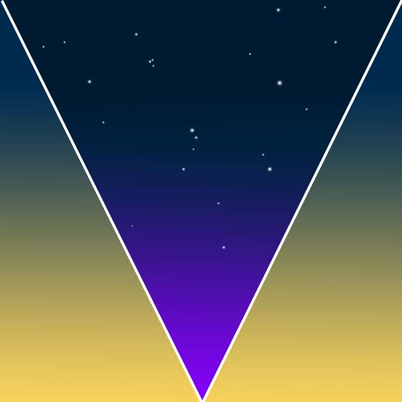

کاوشی در آسمان شب و طبیعتِ گیتی
رویدادهای نجومی نزدیک — بارشهای شهابی، ماهگرفتگیها — و گزارشهای تازهی گروه.
چند ابزار و راهنمای عملی برای شروع و ادامهی رصد آسمان.

رصد آسمان شب همیشه به ابزار گرانقیمت نیاز ندارد گاهی دو چشم بینا و یک نقشه ساده میتواند ماهها شما را مشغول خود کند. در این بخش میتوانید نقشه آسمان فصل را دانلود کنید و پرینت بگیرید و در ماجراجوییهای شبانه خود از آن استفاده کنید.
دریافت نقشه ↗
در زمان بارشهای شهابی علاوه بر لذت بردن از زیبائی آنها میتوانید همزمان در یک پروژه علمی هم مشارکت کنید و با ثبت علمی شهابها از دیدن بارش لذت دو چندان ببرید در این قسمت اطلاعات اولیه و فرم ثبت شهابها در دسترس شماست.
دریافت دفترچه ↗
پیدا کردن یک رصدگاه که هم آسمانی پرستاره داشته باشد هم دسترسی به آن راحت باشد همیشه کار دشواری است در این بخش به بررسی شیوههای انتخاب یک رصدگاه خوب و بررسی پارامترهای علمی و محیطی آن میپردازیم.
بیشتر بخوانید ↗
آسمان پرستاره تنها مورد علاقه انسانهای کنجکاو نیست بلکه مناطقِ آسمان تاریک زیستگاه بسیاری از جانداران است که به تاریکی آسمان شب برای بقای خود نیاز دارند. تلاش برای مبارزه با آلودگی نوری نه تنها برای امور علمی اهمیت دارد که نوعی فعالیت در راستای حفظ محیط زیست نیز محسوب می شود.
بیشتر بدانید ↗
برگزاری شبهای رصدی و گشتهای رصدی بصورت خصوصی و نیمه خصوصی

کارگاههای آموزشی عکاسی آسمان شب و پردازش تصاویر نجومی

کارگاههای آموزشی نجوم رصدی بصورت حضوری و دورههای آنلاین و آفلاین آموزشی نجوم برای کودکان و بزرگسالان